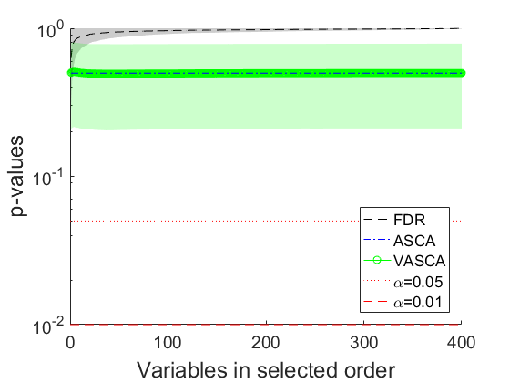
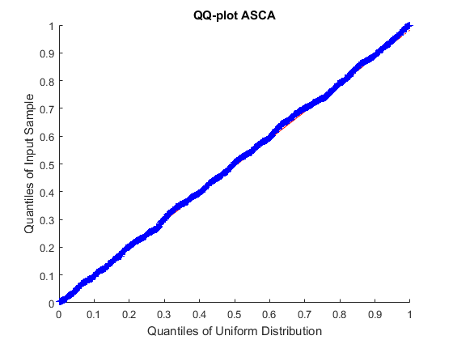
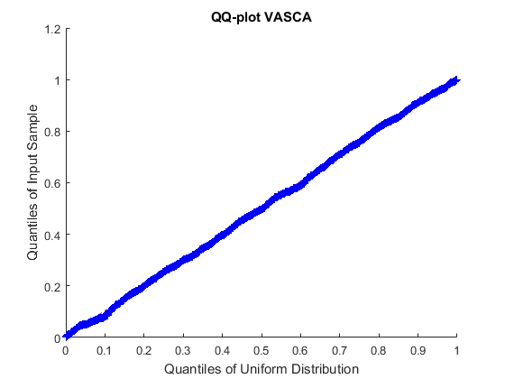
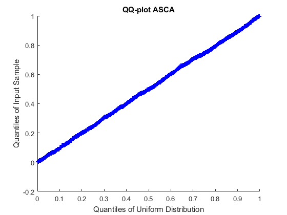
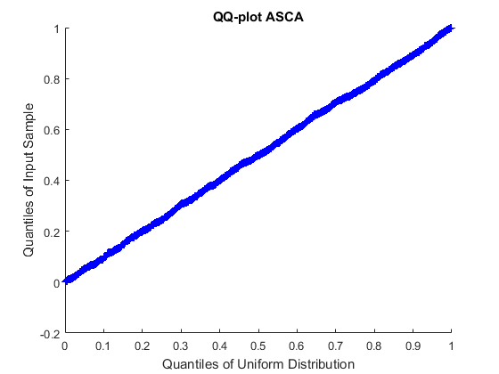

First simulation example in Variable-Selection ANOVA Simultaneous Component Analysis. Bioinformatics. 2022
Camacho J, Vitale R, Morales-Jimenez D. and Gómez-Llorente C.
We simulate a single factor with two levels and 40 subjects for which 400 variables or responses (e.g., -omics features) are collected. The first example illustrates the case where the data matrix and the levels coding for the factor are unrelated.
coded by: Jose Camacho (josecamacho@ugr.es) last modification: 26/Oct/2022
Copyright (C) 2022 University of Granada, Granada Copyright (C) 2022 Jose Camacho Paez
This program is free software: you can redistribute it and/or modify it under the terms of the GNU General Public License as published by the Free Software Foundation, either version 3 of the License, or (at your option) any later version.
This program is distributed in the hope that it will be useful, but WITHOUT ANY WARRANTY; without even the implied warranty of MERCHANTABILITY or FITNESS FOR A PARTICULAR PURPOSE. See the GNU General Public License for more details.
You should have received a copy of the GNU General Public License along with this program. If not, see http://www.gnu.org/licenses/.
Contents
Simulation
clear n_obs = 40; % number of individuals n_vars = 400; % number of responses or variables rep = 1000; % number of repetitions of the simulation simMV_engine = false; % simulation engine, true for simuleMV, false for randn close all p1 = zeros(rep,1); p2 = zeros(rep,n_vars); p3 = zeros(rep,n_vars); p1F = zeros(rep,1); p2F = zeros(rep,n_vars); p3F = zeros(rep,n_vars); parfor i= 1:rep class = (randn(n_obs,1)>0)+1; % Random association of individuals to the class if simMV_engine X = simuleMV(n_obs,n_vars,7); % Data is independent to the class, and obtained with simuleMV with a medium correlation level else X = randn(n_obs,n_vars); end s = rng(i); [~,parglmo] = parglm(X,class,[],[],[],0); % general linear model (GLM) factorization and (ASCA type) multivariate significance testing with SSQ as the testing statistic rng(s); [~,parglmoVS] = parglmVS(X,class,[],[],[],0); % GLM factorization and (VASCA-type) incremental multivariate significance testing with SSQ as the testing statistic rng(s); [~,parglmoMC] = parglmMC(X,class,[],[],[],0); % GLM factorization and Benjamini-Hochberg (BH) univariate significant testing with SSQ as the testing statistic rng(s); [~,parglmoF] = parglm(X,class); % GLM factorization and (ASCA type) multivariate significance testing with F as the testing statistic rng(s); [~,parglmoVSF] = parglmVS(X,class,[],[],[],0); % GLM factorization and (VASCA-type) incremental multivariate significance testing with F as the testing statistic rng(s); [~,parglmoMCF] = parglmMC(X,class,[],[],[],0); % GLM factorization and Benjamini-Hochberg (BH) univariate significant testing with F as the testing statistic p1(i) = parglmo.p; p2(i,:) = parglmoVS.p(parglmoVS.ord_factors); p3(i,:) = parglmoMC.p(parglmoMC.ord_factors); p1F(i) = parglmoF.p; p2F(i,:) = parglmoVSF.p(parglmoVSF.ord_factors); p3F(i,:) = parglmoMCF.p(parglmoMCF.ord_factors); end save example1_randn
Plot Figures SSQ
load example1_randn minT = 1e-3; maxT = 1; h = figure; hold on p1(find(p1(:)<minT)) = minT; p1(find(p1(:)>maxT)) = maxT; p2(find(p2(:)<minT)) = minT; p2(find(p2(:)>maxT)) = maxT; p3(find(p3(:)<minT)) = minT; p3(find(p3(:)>maxT)) = maxT; mp3 = mean(p3); plot(mp3,'k--') plot([1 n_vars],[mean(p1) mean(p1)],'b-.') mp2 = mean(p2); plot(mp2,'g-o') plot([0 n_vars],[0.05 0.05],'r:') plot([0 n_vars],[0.01 0.01],'r--') legend('FDR','ASCA','VASCA','\alpha=0.05','\alpha=0.01','Location','southeast') xr = []; yr = []; for i=1:size(p3,2) xr = [xr;i*ones(1,2)]; yr = [yr;[mean(p3(:,i))-std(p3(:,i)) mean(p3(:,i))+std(p3(:,i))]]; end yr(find(yr<minT)) = minT; yr(find(yr>maxT)) = maxT; fill([xr(:,1);flipud(xr(:,2))],[yr(:,1);flipud(yr(:,2))],'k','FaceAlpha',0.2,'EdgeColor','none'); xr = []; yr = []; for i=1:size(p2,2) xr = [xr;i*ones(1,2)]; yr = [yr;[mean(p2(:,i))-std(p2(:,i)) mean(p2(:,i))+std(p2(:,i))]]; end yr(find(yr<minT)) = minT; yr(find(yr>maxT)) = maxT; fill([xr(:,1);flipud(xr(:,2))],[yr(:,1);flipud(yr(:,2))],'g','FaceAlpha',0.2,'EdgeColor','none'); plot([1 n_vars],[mean(p1) mean(p1)],'b-.') a=get(h,'CurrentAxes'); set(a,'FontSize',14) set(a,'YScale','log') ylabel('p-values','FontSize',18) xlabel('Variables in selected order','FontSize',18) saveas(gcf,'./Fig/example1_randn'); saveas(gcf,'./Fig/example1_randn.eps','epsc'); % QQ-plot figure, qqplot(p1,makedist('Uniform')), title('QQ-plot ASCA') saveas(gcf,'./Fig/example1_randn_QQ_ASCA'); saveas(gcf,'./Fig/example1_randn_QQ_ASCA.eps','epsc'); figure, qqplot(p2(:,1),makedist('Uniform')), title('QQ-plot VASCA') saveas(gcf,'./Fig/example1_randn_QQ_VASCA'); saveas(gcf,'./Fig/example1_randn_QQ_VASCA.eps','epsc');  
Plot Figures F-ratio
load example1_randn minT = 1e-3; maxT = 1; h = figure; hold on p1F(find(p1F(:)<minT)) = minT; p1F(find(p1F(:)>maxT)) = maxT; p2F(find(p2F(:)<minT)) = minT; p2F(find(p2F(:)>maxT)) = maxT; p3F(find(p3F(:)<minT)) = minT; p3F(find(p3F(:)>maxT)) = maxT; mp3F = mean(p3F); plot(mp3F,'k--') plot([1 n_vars],[mean(p1F) mean(p1F)],'b-.') mp2F = mean(p2F); plot(mp2F,'g-o') plot([0 n_vars],[0.05 0.05],'r:') plot([0 n_vars],[0.01 0.01],'r--') legend('FDR','ASCA','VASCA','\alpha=0.05','\alpha=0.01','Location','southeast') xr = []; yr = []; for i=1:size(p3F,2) xr = [xr;i*ones(1,2)]; yr = [yr;[mean(p3F(:,i))-std(p3F(:,i)) mean(p3F(:,i))+std(p3F(:,i))]]; end yr(find(yr<minT)) = minT; yr(find(yr>maxT)) = maxT; fill([xr(:,1);flipud(xr(:,2))],[yr(:,1);flipud(yr(:,2))],'k','FaceAlpha',0.2,'EdgeColor','none'); xr = []; yr = []; for i=1:size(p2F,2) xr = [xr;i*ones(1,2)]; yr = [yr;[mean(p2F(:,i))-std(p2F(:,i)) mean(p2F(:,i))+std(p2F(:,i))]]; end yr(find(yr<minT)) = minT; yr(find(yr>maxT)) = maxT; fill([xr(:,1);flipud(xr(:,2))],[yr(:,1);flipud(yr(:,2))],'g','FaceAlpha',0.2,'EdgeColor','none'); plot([1 n_vars],[mean(p1F) mean(p1F)],'b-.') a=get(h,'CurrentAxes'); set(a,'FontSize',14) set(a,'YScale','log') ylabel('p-values','FontSize',18) xlabel('Variables in selected order','FontSize',18) saveas(gcf,'./Fig/example1_randn'); saveas(gcf,'./Fig/example1_randn.eps','epsc'); % QQ-plot figure, qqplot(p1F,makedist('Uniform')), title('QQ-plot ASCA') saveas(gcf,'./Fig/example1_randn_QQ_ASCA'); saveas(gcf,'./Fig/example1_randn_QQ_ASCA.eps','epsc'); figure, qqplot(p2F(:,1),makedist('Uniform')), title('QQ-plot VASCA') saveas(gcf,'./Fig/example1_randn_QQ_VASCA'); saveas(gcf,'./Fig/example1_randn_QQ_VASCA.eps','epsc');
 
 Compute table with statistics
load example1_randn name={'FDR-SSQ','ASCA-SSQ','VASCA-SSQ','FDR-F','ASCA-F','VASCA-F'}'; p3b = p3(:,:)<0.01; % FDR p3_FPR = sum(sum(p3b))/(rep*(n_vars)); p1b = p1(:)<0.01; % ASCA p1_FPR = sum(p1b)/rep; p2b = p2(:,:)<0.01; % VASCA p2_FPR = sum(sum(p2b))/(rep*(n_vars)); p3b = p3F(:,:)<0.01; % FDR p3F_FPR = sum(sum(p3b))/(rep*(n_vars)); p1b = p1F(:)<0.01; % ASCA p1F_FPR = sum(p1b)/rep; p2b = p2F(:,:)<0.01; % VASCA p2F_FPR = sum(sum(p2b))/(rep*(n_vars)); X = [p3_FPR;p1_FPR;p2_FPR;p3F_FPR;p1F_FPR;p2F_FPR]; T = table(name, X, 'VariableNames', {'Method','FPR'})
T =
Method FPR
___________ _________
'FDR-SSQ' 1.25e-05
'ASCA-SSQ' 0.013
'VASCA-SSQ' 0.0081875
'FDR-F' 1.25e-05
'ASCA-F' 0.011
'VASCA-F' 0.0081875